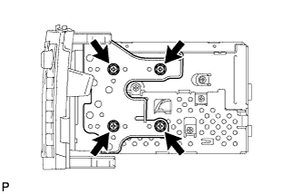

Navigation Receiver Assembly Installation |
| 1. Install Navigation Receiver Assembly |
| 2. Install Radio Bracket NO.2 |
 |
Install the radio bracket NO.2 to the navigation receiver assembly with the 4 screws.
| 3. Install Radio Bracket NO.1 |
 |
Install the radio bracket NO.1 to the navigation receiver assembly with the 4 screws.
| 4. Install Navigation Receiver Assembly w/ Bracket |
Connect the connectors.
 |
Engage the 4 clips and temporarily install the navigation receiver assembly w/ bracket.
 |
Install the navigation receiver assembly w/ bracket with the 4 bolts.
| 5. Install Instrument Panel Register Assembly CTR |
 |
Connect the connector.
 |
Engage the 2 clips, 5 claws and 3 guides, and install the instrument panel register assembly CTR.
| 6. Install Instrument Panel Finish Panel End RH |
 |
Engage the 4 clips and install the instrument panel finish panel end RH.
| 7. Install Instrument Panel Finish Panel End LH |
 |
Engage the 4 clips and install the instrument panel finish panel end LH.
| 8. Connect Battery Negative Terminal |
| 9. Setting Procedure When Disconnecting/Reconnecting Battery Terminal |
)